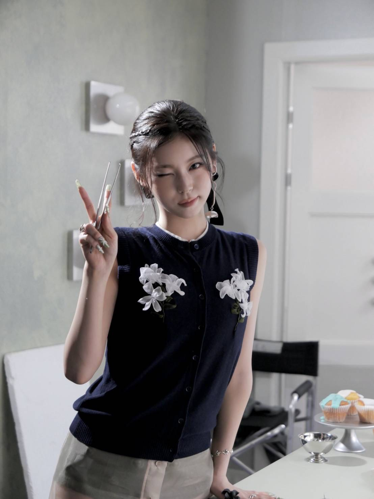

NMIXX 官方「全能忙內」& 舞台中心 🐱
Kyujin 是 NMIXX 的主舞 (Main Dancer)，同時兼任領 Rapper 與副唱。雖然是隊內最小的成員，但以穩健的 Live 和充滿爆發力的舞蹈聞名，是隊內的「全能型藝人」。
她是團體中典型的「表情匠人」，在《DASH》、《O.O》等主打歌中經常擔任開場與結尾的 Center 位。
📍 世界巡迴： 正在進行《EPISODE 1: ZERO FRONTIER》世巡。
📍 高雄加場： 2026年7月11日將在高雄巨蛋開唱！
📍 T1 合作： 預計於 4 月下旬參與英雄聯盟 T1 主場日活動。